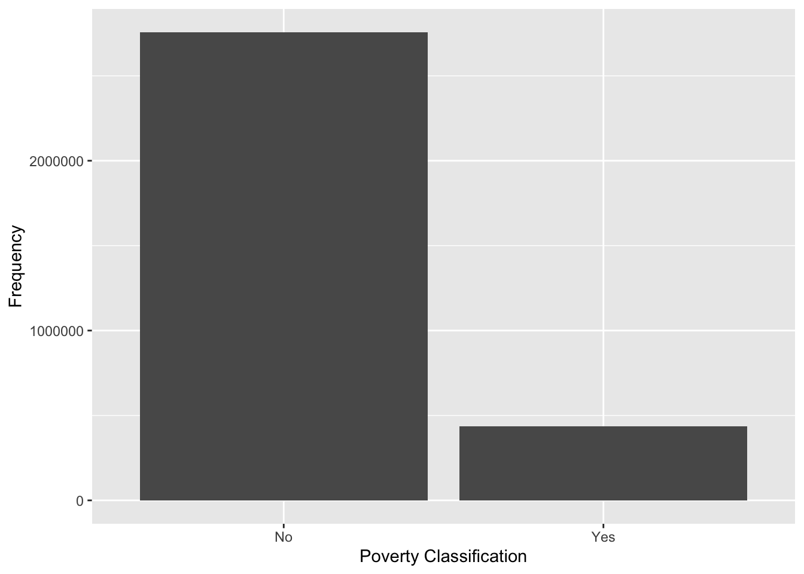
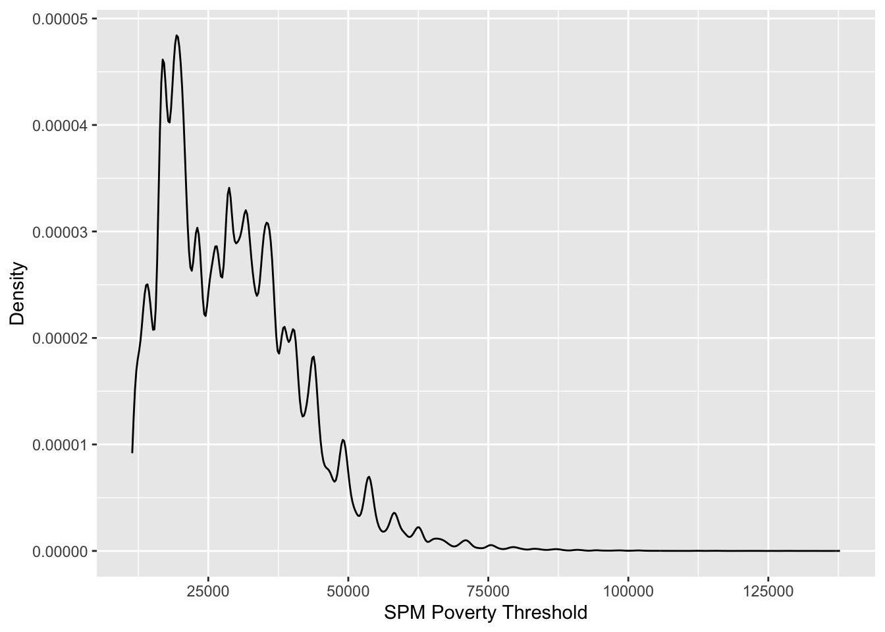
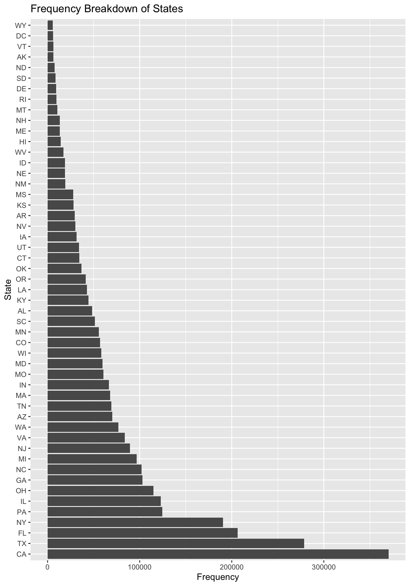

# Basic code to create this csv is in the eda.qmd file in this directorydf <- readr::read_csv("../data/poverty_data.csv.gz")
Rows: 3192208 Columns: 13
── Column specification ────────────────────────────────────────────────────────
Delimiter: ","
dbl (13): spm_poor, spm_povthreshold, st, wt, age, mar, sex, education, race...
ℹ Use `spec()` to retrieve the full column specification for this data.
ℹ Specify the column types or set `show_col_types = FALSE` to quiet this message.
Data Ingestion and cleanup
# This code is used to get the actual state from the FIPs codefips_to_state <- tidycensus::fips_codes %>%select("state", "state_code") %>%distinct() %>%mutate(state_code =as.numeric(state_code))df <- df %>%rename(state_code = st) %>%left_join(fips_to_state, join_by(state_code))# This is just to get the labels for the various categorical codes in the original dataset# This information can be found in spm-asc-data-dictionary.pdfdf <- df %>%mutate(education =factor(education, levels=0:4, labels=c(NA, "Less than a HS degree", "HS degree", "Some college", "College degree")),sex =factor(sex, levels =1:2, labels =c("male", "female")),race =factor(race, levels =1:4, labels =c("white", "black", "asian", "other")),mar =factor(mar, levels =1:5, labels =c("married", "widowed", "divorced", "separated", "never married")) )
1. Research Question
I want to understand the interplay of various predictors of an individuals poverty status according to the Supplemental Poverty Measure (SPM). We know of many usual predictors of poverty; age, education, state of residence, etc. On their own that may not be too interesting, however, I think there is a lot of value in examining the relationship between these predictors in determining an SPM poverty classification. As an example, say we hold an individuals out-of-pocket medical expenses fixed, how much of an impact does education or age play into a possible poverty classification? As another example, say we have two 70 year olds. How much influence does marital status have on poverty? Is an older adult who is single at more or less risk of poverty than someone who was widowed? If two people have the same adjusted gross income, does race still play an important part in risk of poverty due to other factors?
Using this information, I intend to estimate the probability that an individual is classified as poor according to the SPM. I also intend to identify which variables are the most influential in making this prediction.
Note: For more information on the supplemental poverty measure here is information from the Census Bureau: Link
Here is a general motivation for using the SPM versus the official measure taken from that link.
Critics of the official measure point out that the official income or resource measure fails to account for noncash government benefits, taxes, medical out-of-pocket (MOOP) expenses, and work expenses. Those critics also point out that the official thresholds are a very narrow measure of necessary expenditures—that is, food—and are based on very old data. They argue that the official thresholds also fail to adjust for geographic differences in the cost of living, and that the official measure’s unit of analysis (the Census-defined family) is too narrow.
2. Data Source
The data I’m used is a single table acquired directly from the Census Bureau’s website. The data can be found here.
3. Observation Count
My dataset has approximately 3.2million rows of observations. Each observation represents a single person.
4. Are you merging multiple datasets?
I’m joining to a convenient dataset in the tidycensus package which allows me to convert state FIPS codes to their actual state. (8 -> CO for example).
5. Variables
Variable
Description
Variable Type
spm_poor
Poverty status under SPM (1 = poor, 0 = not)
Binary
spm_povthreshold
SPM poverty threshold for the unit
Continuous (numeric)
st
State of residence
Categorical
wt
Person-level weight
Continuous (numeric)
age
Age of individual
Continuous (numeric)
mar
Marital status
Categorical
sex
Sex of individual
Binary/Categorical
education
Educational attainment
Categorical
race
Race
Categorical
hispanic
Hispanic ethnicity
Binary/Categorical
agi
Adjusted gross income
Continuous (numeric)
hi_premium
Health insurance premium
Continuous (numeric)
moop_other
Medical out-of-pocket expenses
Continuous (numeric)
6. Response Variable
My response variable will be spm_poor.
7. Data Distribution
I intend to use a Bernoulli data distribution.
8. Response Variable Numerical Summary
summary(df$spm_poor)
Min. 1st Qu. Median Mean 3rd Qu. Max.
0.0000 0.0000 0.0000 0.1363 0.0000 1.0000
table(df$spm_poor)
0 1
2757155 435053
9. Response Variable Visual Summary

Predictor Visual Summaries
SPM Poverty Threshold

State

Note: I will likely be changing this variable to a region variable instead using either the Census Bureaus four statistical regions or their nine divisions. Obviously using all of these states as categories would be ill-advised. Link to Regions.